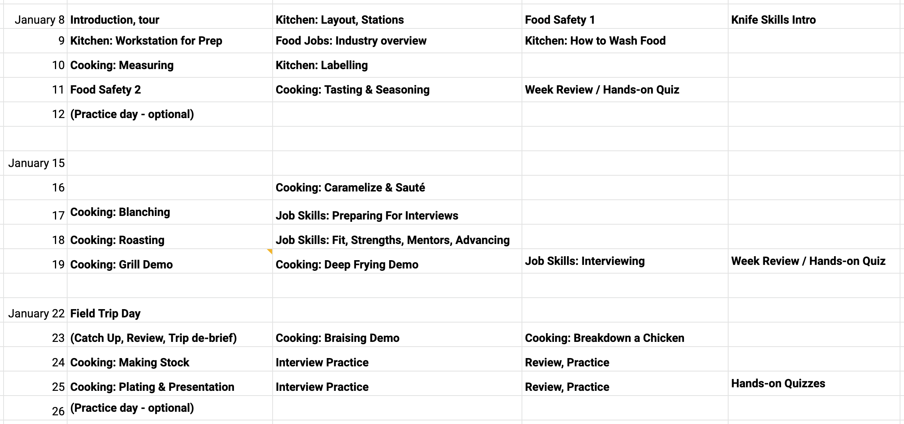
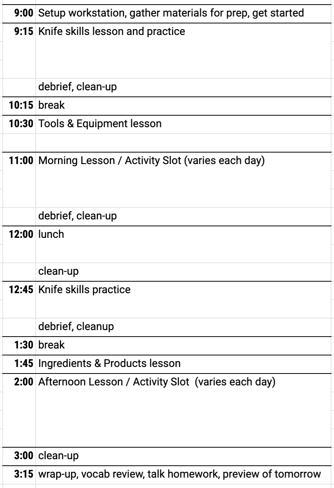

About the Curriculum
Revisions
At this point, the curriculum has effectively hit its fourth revision.
The first cut was from our friend Shannon Vakil via the UW education
department who we hired to help us capture and formalize the initial
ideas. This was (and is) great — and we will also publish this version —
but chef/teacher Jon Churan and I thought that it was too monolithic,
and that the class would benefit from modularizing the various
subjects/topics so that the schedule could be moved around if necessary.
(See an example weekly and daily schedule below.) Sometimes at FEED
Kitchens, where we’ve taught, we walked in to find that the equipment we
planned to teach on/with was occupied by another crew working hard to
stock up a food truck or cater an event. So we needed to be able to
pivot and adapt (just like a real kitchen) and that meant the ability to
swap out modules. But for sure, the spirit, pacing, and care for
students and learning from the original founding document stayed in
there.
The modularization will aid others who would like to use components of
FirstCourse without necessarily wanting to do the whole thing. It will
also make it easier for me to finally get the modules open-sourced
<wink>.
The third revision happened after we wrapped the first round of class;
Jon and I sat down, reviewed our notes, incorporated feedback from
students and guest instructors, and made some changes. We did the same
after the second round of classes.
An example of something we changed in those revisions: we axed quizzes…
one of our guiding bedrock principles when we designed FirstCourse is
“what’s it like in a real kitchen?” This way, class is not just
training, but it’s experience. And it turns out, there aren’t quizzes at
a real job. Additionally, we noticed that students really struggled with
written quizzes, even when they knew the material backwards and
forwards. Not every person thrives on written performance evaluation,
and since it didn’t track with anything in the real world of a kitchen
job, we ditched it in favor of other ways to evaluate learning
retention.
We also added more hands-on work. Again, trying to copy a “real” job,
where often a worker will arrive at work to find a prep-list or other
note about what to do, we modeled exercises on that situation: Chef Jon
and teacher Ryan would write up a prep list incorporating several of the
lessons, vocabulary words, techniques, tools, and ingredients that we
had covered so far. Critically we added two other key components to this
time: working together, and a trick. We wanted the students to get
familiar with negotiating the dividing up of tasks, supporting one
another with skills and double-checking skills and knowledge, and just
cooperation… again, just like a real kitchen. And for the trick, we
would hide a trick into the list; for example we might write “chop
onions” but not how many, or what kind of cut. In FirstCourse, we
relentlessly tell students to get good at asking questions, and to ask
early and often: it’s better to ask and get it right than to guess and
get it wrong. Hiding the tricks into these exercises was good practice,
and if/when they forgot to ask, it was a good moment to re-teach. I came
to enjoy these times of class the most; watching the students remix
their accumulated skills, knowledge, and problem solving in real time
really showed me how what we made was coming together.


No doubt we will continue to refine and adapt the curriculum modules,
and I look forward to collaborating with some of you on your
contributions and critiques.
Over-reliance on our great teachers?
A design goal of the FirstCourse curriculum was “that any competent
teacher can teach nearly anyone to be useful in a kitchen job in three
weeks.” So far, I suspect that this goal might be overly optimistic: the
quality of training currently relies heavily on the fact that our
teachers have deep experience, high skill, strong empathy, and a
passionate commitment to the concept. (All the educators in the audience
are now saying “duh!”) It will be a challenge to distill some of this
expertise into a document or process that others can follow, but we’re
going to keep at it.
About the Employment Market:
It continues to be crazy. Employers continue to have trouble finding
adequate help, let alone skilled and experienced help. Here’s a
good article
from the local paper earlier this year on the subject. In fact, one of
our founders just announced the closing of his flagship restaurant,
citing inadequate staffing (among other factors) for the difficult
decision.
For FirstCourse, this has positives and negatives. One would think that
this would mean that the demand for our training would go up, but what
we’re seeing is that those who are interested in these kinds of jobs can
often just get the job — without training — such is the need that
employers have. We continue to believe that both workers and employers
would benefit from the training, and that we can offer good value to
both sides of the equation, and we will need to press our case a little
harder: that a trained worker is a better hiring risk for employers and
managers, and for workers, that training will help them succeed in the
long run.
The GOOD news about this labor shortage is that we are seeing wages and
benefits going up, and we are seeing some bosses commit to more
worker-friendly policies and management. Ultimately, this is a
meta-level goal for us at FoodWorks, so we’re happy to see it continuing
to get better.
About Reaching People
We have had serious challenges reaching the right students. We knew this
would be hard, and it has been, and most of our strategies haven’t
worked well. We had public information sessions in public libraries, we
had sessions hosted at social service organizations like the Urban
League, we put up signs at community centers, we told employers to
spread the word, and more. But in the end, we had to work pretty hard to
fill our classes, probably spending 3+ hours of time per student, and we
didn’t have always have good alignment.
Our “customer” is a person who is un- or under-employed, who is able,
willing and ready to work, and who would benefit from an intensive
training program. This leaves out several segments of the population:
obviously, people who are already working, who can’t or don’t want to
work, and crucially, those who do want to work but experience additional
profound challenges that mean they require extra support and services.
These latter people are not our sweet spot, not because we don’t want to
serve them, but just because they need so much more than we can
currently offer. Fortunately, there are a number of programs and
organizations in town who are already doing this profoundly important
work.
We continue to believe that there is a significant spectrum of people
who want to work, are able to work, and could benefit from the skills,
confidence, experience and connections that FirstCourse can offer. The
challenge has been in getting in touch with them; it’s a marketing
problem, really. We always knew this would be a challenge, so by design
we planned to lean heavily on the social service organizations as
“feeders”, or to turn it around, we offer our training as a pipeline
service to the organizations and their clients, rather than trying to
duplicate their deep ties to the communities they serve. But so far, it
has been difficult to establish the partnerships that make this
possible. Part of this is natural: we have to earn the trust of the
social service organizations to whose clients we aim to offer our
services; in our first couple of interactions, we can’t expect to be
their priority, even if they are ours. We continue to earn and keep this
trust, so this will keep getting better.
We will continue to seek new ways to get our word out, build our
reputation, and build a network of allies, graduates, and supporters.
About the Graduation Bonus
We have always been committed to treating our students with the dignity
and respect that they deserve, and to demonstrating that in addition to
saying that. One of the ways we do this is by paying them for their
time. As you know, FirstCourse is effectively paid training: all of our
graduates received $1000 grants for completion. If you want to do the
math, that ends up being about $14/h. We love this aspect of how we do
things, and what it represents, but it has caused some distortion,
perhaps a perverse incentive to enroll in the class:
So, FirstCourse is fun. The students love it; the teachers love it; the
guest chefs love it; I love it. It’s a great way to spend three weeks,
and to get paid to do that is pretty fantastic. But our mission isn’t to
teach fun cooking classes, it’s job training for kitchen jobs.
Unfortunately, a number of our students were not well aligned to our
goals: some were already working, some weren’t sincere about their goals
to work in the field, some already had experience in the field. Some
just heard that you could take a cool cooking course for three weeks and
take home $1000. This means that we had a bunch of graduates who
contributed greatly to class, but then didn’t seek employment in the
culinary field upon graduation. We believe that the bonus is part — but
not all — of this dynamic.
A Waste?
Normally it wouldn’t be a big deal to “waste” money in this way, paying
people for their time and doing job training are both objectively good
things. But I consider our startup money — your money — to be a precious
and finite resource; it’s our runway. And we can’t learn from our
graduates if they don’t work in the field: we can’t query their
employers, we can’t interview them, we can’t close the circle to refine
and improve our services. It’s also created a bit of awkwardness where
we can’t keep a connection alive to our graduates: they feel sheepish
about not working in the field, so don’t want to connect with us to
refine curriculums, have exit interviews, etc. We can’t reach them, so
we can’t learn from them, nor can we create the peer network for
graduates that we aim to create.
How to Keep It?
We do want to keep the principle of the bonus: that people’s time is
valuable and they should expect it to be treated as such. But we will
have to find another way. Fortunately, we can rely on our peers around
the country for other models. Our membership in Catalyst Kitchens
program (as mentioned above) will offer some other innovations that we
can learn from, like tying bonus to post-graduation work.
About People with More Profound Needs
I don’t have to tell you how one of the chief challenges of poverty and
lack of equity is how complicated it can be. Something as simple as
transportation can be a daunting crisis for some. For us, it might just
be “what do you mean, it’s an 8 minute drive?” but for some, it might be
1:45 on the bus, with only one shot to make the connection at a transfer
point. And what if the babysitter shows up late and you miss that bus?
Let alone family support, or profound challenges like homelessness or
substance abuse. FoodWorks is simply not equipped or trained to help
people with these some of these extra challenges. Fortunately, some
other excellent organizations are. We have a growing connection to
Just Bakery
who does all this and more.
About the Value of Networks
Perhaps the biggest thing we learned is something that probably should
have been obvious: for some
our network of aligned employers is just as valuable as our training . Looking back, I’m embarrassed that I
didn’t suss this out earlier, as
it seems so obvious now. It first came to me in our first round of
FirstCourse, when one of our most engaged and excited students mentioned
that he hadn’t heard of the Willy Street Coop. The Coop is such a big
part of my Madison, that it honestly didn’t occur to me that someone who
was interested in food and cooking may not have heard of it. And if he
hadn’t heard of it, he certainly wouldn’t know that they offer good pay
and benefits, and have a central kitchen that employs a bunch of prep
cooks. This is a form of cultural ignorance on my part, but it led to an
insight that I think is important: to generalize, many of the best and
most progressive would-be employers in and around Madison were simply
not in the orbit, or social-graph, if you will, of many of our students.
Also, with lots of friends in the “service industry” I’ve noticed that
there is an informal support network of those who work in the field. It
can look like gossip to outsiders, but among certain people who work in
the food industry, everyone knows who pays well, who’s a decent boss (or
a terrible one), who is about to open a new place, who has flexible
hours, who’s cool about maternity leave, etc. This network forms a
valuable support function for people in the industry, and I’ve thought
long about how to include more people like our students into it, or at
the very least, to use our knowledge of it to help curate the
connections between job-seekers and employers.
And there are a number of people in Madison who already work in the
culinary field, but would like to upgrade to a job with better pay,
nicer boss, better benefits, or just one that has more of a career
track. Those people don’t really need our training, but they certainly
would benefit from a service that matched them with jobs among the best
progressive employers in the industry. It would be wonderful to be able
to offer this service to more people than just our graduates, and to
offer it systematically and sustainably rather than just ad-hoc.
Build that Network
Last year, we wrote a grant to formalize and bootstrap this process: to
get serious about match-making in the professional kitchen world, design
a system, capture data, hire a match-maker staff person and so on. We
aimed to start with our own graduates to design and build the system,
then to operate it as a public utility for all job seekers and employers
in the culinary sector in and around Madison. Unfortunately, we didn’t
get that grant, but I continue to think it’s a key piece of the puzzle,
and we’re continuing to noodle on how to build it and what its business
model should be. So, more on this later. Meanwhile, we will continue the
ad-hoc process of matching graduates to employers according to their
mutual needs and alignments.